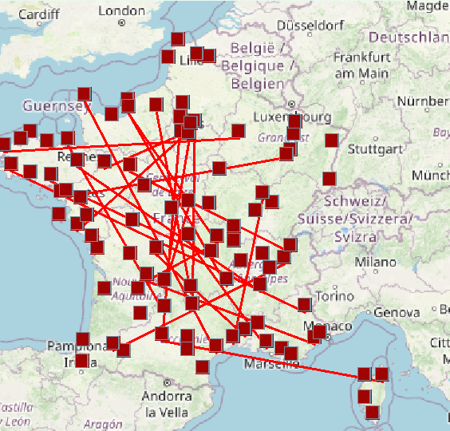
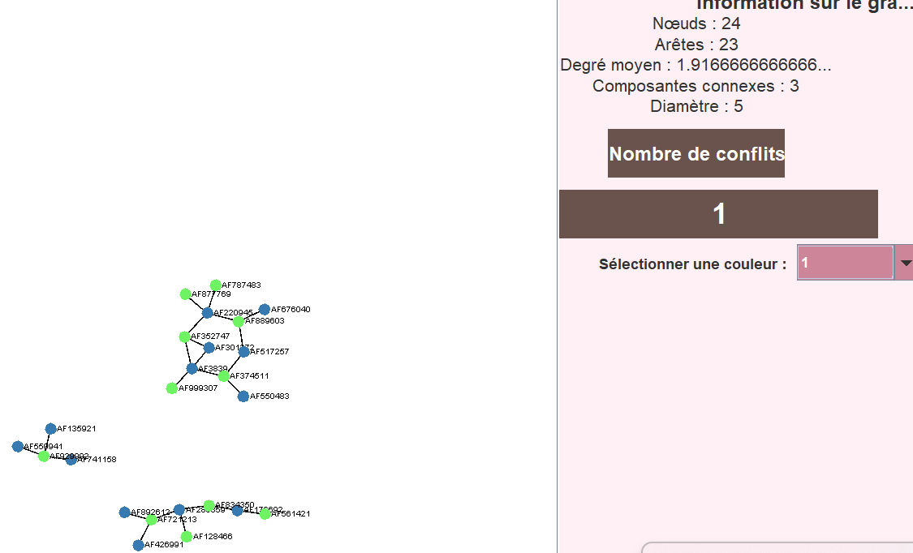

Introduction au projet
Le projet "Planification du Transport Aérien" a pour objectif de gérer l’espace aérien français pour un ensemble de vols entre plusieurs aéroports. Afin d’éviter les collisions potentielles, l’application attribue des niveaux de vol (de 1 à kmax) aux vols susceptibles de se croiser, modélisant ainsi le problème sous forme de coloration de graphe.

Description détaillée
Le système doit analyser les données issues de fichiers CSV contenant les informations des aéroports et des vols. À partir de ces données, un graphe d’intersection est construit : chaque vol correspond à un sommet et une arête relie deux vols si leurs trajectoires s’intersectent et si l’écart entre leurs horaires de passage est inférieur à 15 minutes.
L’objectif est de colorier ce graphe en utilisant au maximum kmax couleurs, de façon à minimiser le nombre de conflits (cas où deux vols en collision se voient attribuer la même couleur). Des algorithmes de coloration seront développés et testés, et la visualisation du graphe se fera via la librairie Graphstream.
Construction de la carte d'intersection

Algorithme de coloration et minimisation des conflits

Consignes et détails techniques
Sujet : Planification du Transport Aérien pour la gestion de l’espace aérien français.
- Utiliser des fichiers CSV pour charger les données des aéroports et des vols.
- Construire le graphe d’intersection des vols (sommet = vol, arête = collision potentielle).
- Modéliser le problème comme une coloration de graphe avec un maximum de kmax couleurs.
- Développer et tester différents algorithmes de coloration afin de minimiser le nombre de conflits.
- Utiliser la librairie Graphstream pour la visualisation des graphes.
- Concevoir une interface graphique permettant de charger les données, sélectionner les algorithmes, afficher des statistiques et visualiser la coloration.
- Produire des fichiers de sortie pour évaluer les performances de la coloration sur des graphes d’évaluation.
- Intégrer les aspects de gestion de projet et de qualité de code (cahier des charges, tests unitaires, etc.).
Le projet intègre plusieurs volets (SAE 201, SAE 202, SAE 205) et doit répondre à la fois aux exigences techniques et à celles de l’interface utilisateur.
Téléchargement du projet
Téléchargez le projet complet pour accéder au code source, aux algorithmes de coloration et à l’interface graphique.
Télécharger le projet (ZIP)